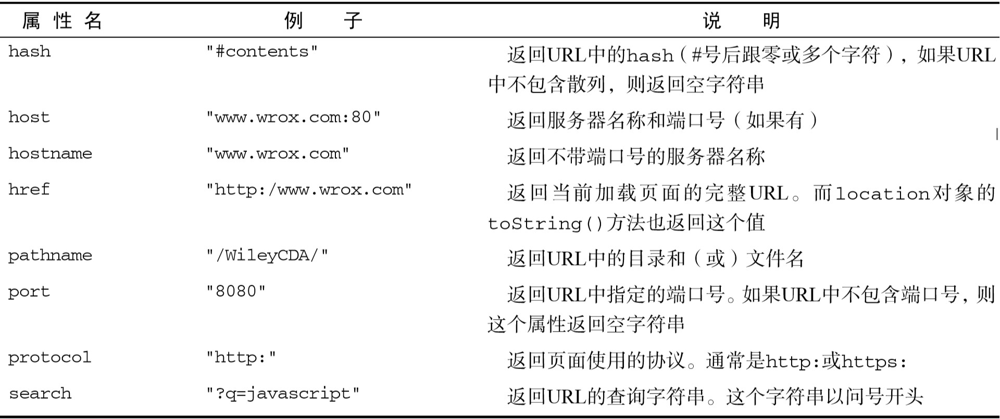

BOM
BOM（浏览器对象模型）
8.1 window 对象
BOM的核心对象是 window，它表示浏览器的一个实例。在浏览器中，window 对象有双重角色，它既是通过 JavaScript访问浏览器窗口的一个接口，又是 ECMAScript规定的 Global 对象。
8.1.1 全局作用域
全局变量不能通过 delete 操作符删除，而直接在 window 对象上的定义的属性可以。
1 | var age = 29; window.color = "red"; |
使用 var 语句添加的 window 属性的[[Configurable]]特性的值被设置为false，因此这样定义的属性不可以通过delete操作符删除
通过查询 window 对象，可以知道某个可能未声明的变量是否存在。
8.1.2 窗口关系及框架
页面中包含框架，则每个框架都拥有自己的window对象，并且保存在frames集合中。在frames集合中，可以通过数值索引（从0开始，从左至右，从上到下）或者框架名称来访问相应的window对象。
1 | window.frames[0] |
top对象始终指向高（外）层的框架，也就是浏览器窗口。使用它可以确保在一个框架中正确地访问另一个框架。
与 top 相对的另一个 window 对象是 parent。顾名思义，parent（父）对象始终指向当前框架的直接上层框架。
除非高层窗口是通过 window.open()打开的（本章后面将会讨论），否则其 window 对象的 name 属性不会包含任何值。
self始终指向 window；实际上，self 和 window 对象可以互 换使用。引入 self 对象的目的只是为了与 top 和 parent 对象对应起来
这些对象都为window的属性，可通过window.xxx访问
对象名|指向
-|-
top|始终指向高（外）层的框架
parent|始终指向当前框架的直接上层框架
self|始终指向 window
在使用框架的情况下，浏览器中会存在多个 Global 对象。在每个框架中定义的全局变量会自动成为框架中 window 对象的属性。由于每个 window 对象都包含原生 类型的构造函数，因此每个框架都有一套自己的构造函数，这些构造函数一一对应，但并不相等。
8.1.3 窗口位置
screenLeft 和 screenTop 属性，分别用于表示窗口相对于屏幕左边和上边的位置。
screenX 和 screenY
各浏览器间实现不同
使用moveTo() 和 moveBy() 方法倒是有可能将窗口精确地移动到一个新位置。这两个方法都接收两个参数，moveTo()接收的是新位置的 x和 y坐标值，而 moveBy()接收的是在水平和垂直方向上移动的像素数。
另外，这两个方法都不适用于框架，只能对外层的 window 对象使用。
8.1.4 窗口大小
innerWidth、innerHeight、outerWidth 和 outerHeight
outerWidth 和 outerHeight 返回浏览器窗口本身的尺寸（无论是从外层的 window 对象还是从某个框架访问）
innerWidth 和innerHeight 则表示该容器中页面视图区的大小（减去边框宽度）。
不同浏览器代表不同。
document.documentElement.clientWidth 和 document.documentElement.clientHeight 中保存了页面视口的信息
对于移动设备，window.innerWidth 和 window.innerHeight 保存着可见视口，也就是屏幕上可见页面区域的大小。
resizeTo()和 resizeBy()方法可以调整浏览器窗口的大小
8.1.5 导航和打开窗口
window.open()方法既可以导航到一个特定的 URL，也可以打开一个新的浏览器窗口。这个方法可以接收 4个参数：要加载的 URL、窗口目标、一个特性字符串以及一个表示新页面是否取代浏览器历史记录中当前加载页面的布尔值。
第三个参数是一个逗号分隔的设置字符串，表示在新窗口中都显示哪些特性。
表中所列的部分或全部设置选项，都可以通过逗号分隔的名值对列表来指定。其中，名值对以等号表示（如top=100，注意，整个特性字符串中不允许出现空格）
调用 close()方法还可以关闭新打开的窗口。
弹出窗口关闭之后，窗口的引用仍然还在，但仅能用类似alert的方法检测closed参数了
新创建的 window 对象有一个 opener 属性，其中保存着打开它的原始窗口对象。
虽然弹出窗口中有一个指针指向打开它的原始窗口，但原始窗口中并没有这样的指针指向弹出窗口。窗口并不跟踪记录它们打开的弹出窗口
将 opener 属性设置为 null 就是告诉浏览器新创建的标签页不需要与打开它的标签页通信，因此可以在独立的进程中运行。标签页之间的联系一旦切断，将没有办法恢复。
浏览器扩展或其他程序阻止的弹出窗口，那么 window.open()通常会抛出一个错误。因此，要想准确地检测出弹出窗口是否被屏蔽，必须在检测返回值的同时，将对 window.open()的调用封装在一个try-catch 块中
8.1.6 间歇调用和超时调用
JavaScript 是单线程语言，但它允许通过设置超时值和间歇时间值来调度代码在特定的时刻执行。 前者是在指定的时间过后执行代码，而后者则是每隔指定的时间就执行一次代码。
超时调用需要使用 window 对象的 setTimeout()方法，它接受两个参数：要执行的代码和以毫秒表示的时间（即在执行代码前需要等待多少毫秒）。
第一个参数可以是一个包含 JavaScript代码的字符串（就和在 eval()函数中使用的字符串一样），也可以是一个函数。由于传递字符串可能导致性能损失，因此不建议以字符串作为第一个参数。（一般用匿名函数）
第二个参数是一个表示等待多长时间的毫秒数，但经过该时间后指定的代码不一定会执行。JavaScript 是一个单线程序的解释器，因此一定时间内只能执行一段代码。为了控制要执行的代码，就有一个 JavaScript 任务队列。这些任务会按照将它们添加到队列的顺序执行。setTimeout()的第二个 参数告诉 JavaScript 再过多长时间把当前任务添加到队列中。如果队列是空的，那么添加的代码会立即执行；如果队列不是空的，那么它就要等前面的代码执行完了以后再执行。
调用 setTimeout()之后，该方法会返回一个数值 ID，表示超时调用。这个超时调用 ID是计划执行代码的唯一标识符，可以通过它来取消超时调用。要取消尚未执行的超时调用计划，可以调用 clearTimeout()方法并将相应的超时调用 ID作为参数传递给它。
间歇调用与超时调用类似，只不过它会按照指定的时间间隔重复执行代码，直至间歇调用被取消或者页面被卸载。设置间歇调用的方法是 setInterval()
取消间歇调用的重要性要远远高于取消超时调用，因为在不加干涉的情况下，间歇调用将会一直执行到页面卸载。
1 | var num = 0; var max = 10; |
一般认为，使用超时调用来模拟间歇调用的是一种佳模式。在开发环境下，很少使用真正的间歇调用，原因是后一个间歇调用可能会在前一个间歇调用结束之前启动。而像前面示例中那样使用超时调用，则完全可以避免这一点。所以，好不要使用间歇调用。
8.1.7 系统对话框
alert()、confirm()和 prompt()
为了确定用户是单击了 OK还是 Cancel，可以检查 confirm()方法返回的布尔值：true 表示单击了 OK，false 表示单击了 Cancel或单击了右上角的 X按钮。
prompt()方法生成的，这是一个“提示”框，用于提示用户输入一些文本。提示框中除了显示 OK和 Cancel按钮之外，还会显示一个文本输入域，以供用户在其中输入内容。
prompt()方法接受两个参数：要显示给用户的文本提示和文本输入域的默认值（可以是一个空字符串）。如果用户单击了OK按钮，则 prompt()返回文本输入域的值；如果用户单击了 Cancel或没有单击 OK而是通过其他方式关闭了对话框，则该方法返回 null。
find() 查找 和 print() 打印 方法
8.2 location对象
location它提供了与当前窗口中加载的文档有关的信息，还提供了一些导航功能。是window对象的属性，也是document的属性。
属性

8.2.1 查询字符串参数
location.search 返回从问号到 URL末尾的所有内容
可以新建函数获取?后面的参数
decodeURIComponent()解码URL
8.2.2 位置操作
location 对象可以通过很多方式来改变浏览器的位置。使用assign()方法
改变window.location或者location.href会调用assgin()方法
每次修改 location 的属性（hash 除外），页面都会以新 URL重新加载。
要禁用生成记录行为，应使用replace()方法，不能回到前一个页面
reload()，作用是重新加载当前显示的页面。传入参数true，则强制从服务器重新加载数据，而不传入则可能从缓存中加载。
8.3 navigator 对象
navigator对象
属性见书P200-201
8.3.1 检测插件
plugins属性
- name：插件的名字。
- description：插件的描述。
- filename：插件的文件名。
- length：插件所处理的 MIME类型数量。
因此典型的做法是针对每个插件分别创建检测函数，而不是使用前面介绍的通用检测方法。
plugins 集合有一个名叫 refresh()的方法，用于刷新 plugins 以反映最新安装的插件。
8.3.2 注册处理程序
registerContentHandler()和registerProtocolHandler()
这两个方法可以让一个站点指明它可以处理特定类型的信息。
前者接收参数：要处理的 MIME类型、可以处理该 MIME 类型的页面的 URL以及应用程序的名称。
后者接收参数：要处理的协议（例如，mailto 或 ftp）、处理该协议的页面的 URL和应用程序的名称。
1 | navigator.registerContentHandler("application/rss+xml", "http://www.somereader.com?feed=%s","Some Reader"); |
8.4 screen 对象
用处不大
用来表明客户端的能力，其中包括浏览器窗口外部的显示器的信息
书中P214
8.5 history 对象
go()方法可以在用户的历史记录中任意跳转，可以向后也可以向前。这个方法接受一个参数，表示向后或向前跳转的页面数的一个整数值。
也可以给go()方法传递一个字符串参数，此时浏览器会跳转到历史记录中包含该字符串的第一个位置——可能后退，也可能前进，具体要看哪个位置近。如果历史记录中不包含该字符串，那么这个方法什么也不做
还可以使用两个简写方法 back()和 forward()来代替 go()。
history 对象有一个 length 属性，保存着历史记录的数量。